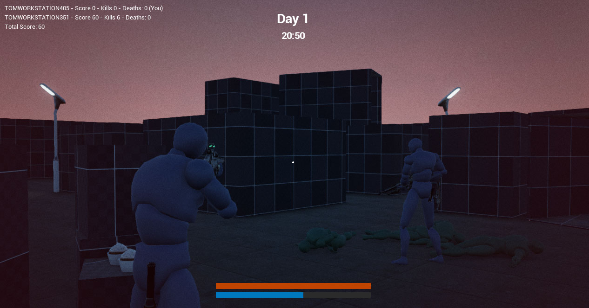
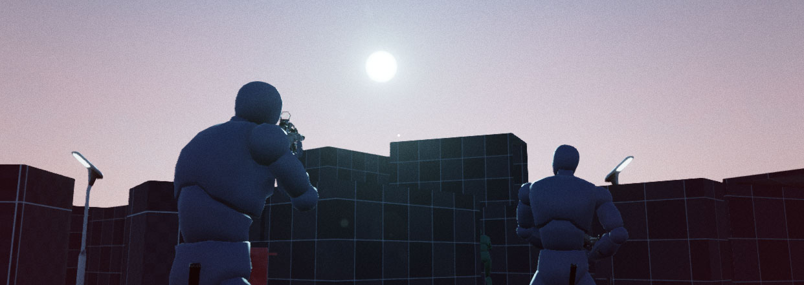
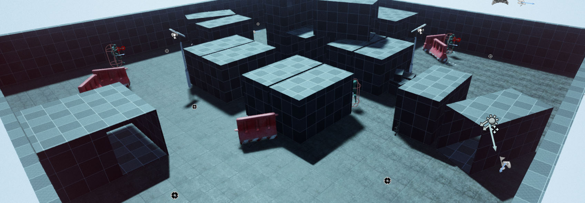
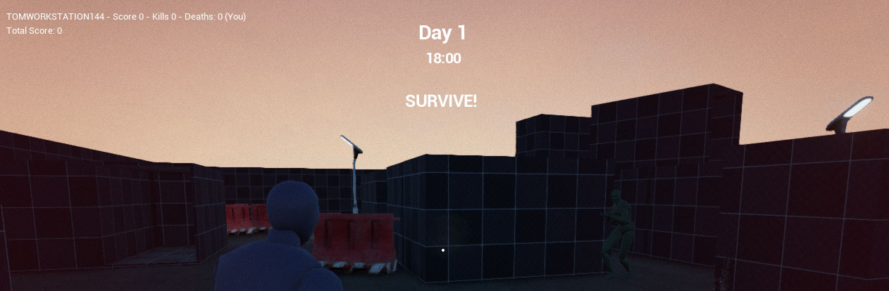
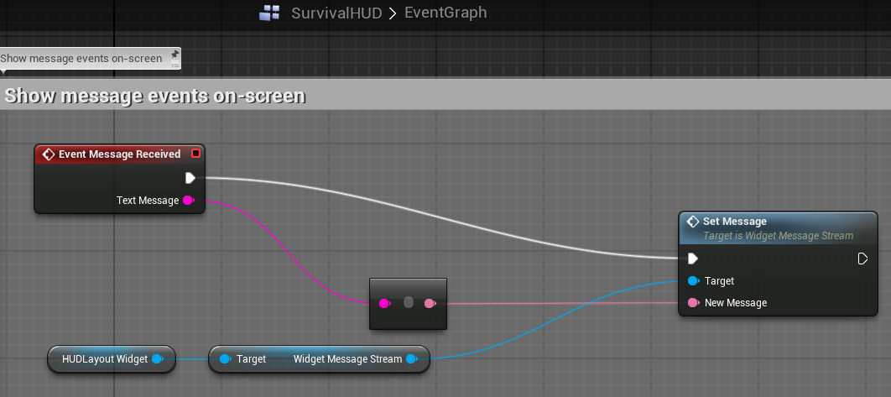
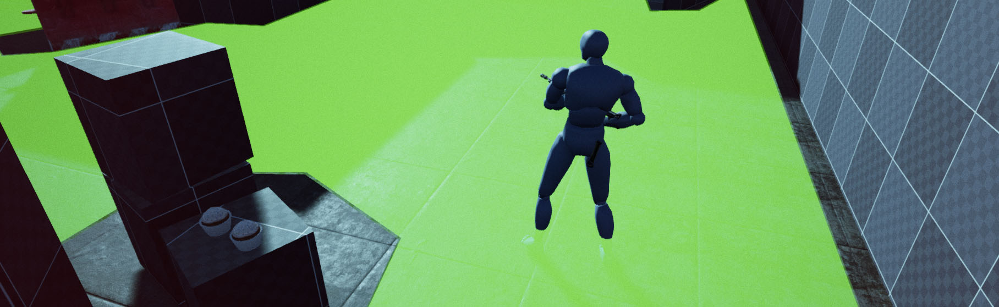
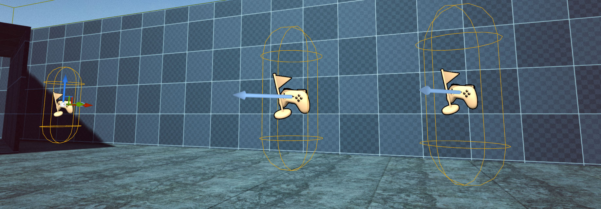

Survival Sample Game: Section 4
C++ Sample project covering common gameplay concepts packed in a small coop survival game.
Contents
Introduction
In section 4 of the ongoing survival game series we introduced a dynamic time of day, advanced player spawning and a basic game loop.
If you are not yet familiar with this ongoing project be sure to check out the for information on the series!

Please consider this documentation a reference guide to get additional information on topics covered in the sample game's source itself. If you have any questions or think a documented concept requires more details then feel free to leave your feedback on the section-specific forum thread!
Links
Time of Day in Multiplayer

Dynamic time of day is a common feature in (open world) survival games. In this series we use it to drive certain gameplay elements beyond visual aspect such as spawning of enemies and respawning players who died during the night at sunrise. That is entirely GameMode specific and can be omitted if you are only interested in steering your time of day in a networked scenario.
Using the existing features, setting up a dynamic time of day is pretty simple. The primary requirements are, a DirectionalLight set to Movable, an instance of BP_SkySphere (automatically added by the default level template) and finally an Actor that holds the time and update the other actors. For this last one I created STimeOfDayManager.cpp, with BP_TimeOfDayManager to update the sun position of the BP_SkySphere which we cannot access from C++ because it's implemented in Blueprint.
The time of day value is stored in SGameState.cpp. GameState objects exist on both the server and client (unlike GameMode, which is unique to the server) and are a good place to store state data on the world.
Replicated values that should appear smooth (like the sun crawling along the horizon) require some additional smoothing on the client side or the result is a choppy motion as data is only received once every few ticks and can be unpredictable with higher latency or packet loss in actual networking scenarios. The Gamemode class controls the sun position on the server side, updated once every second. The client needs to smooth out this 1-second interval by performing some simple prediction which I will explain below.
Client-side smoothing
The variable that controls the time of day is only updated and replicated once per second in our Gamemode. So we need to apply our own per-frame interpolation to smooth out the sun movement.
We smooth out the movement by keeping track of the last time we received and update for ElapsedGameTime variable (stored in SGameState) and applying a prediction to the sun position based on how long ago that was multiplied by the speed the sun is moving.
// STimeOfDayManager.cpp
void ASTimeOfDayManager::Tick(float DeltaSeconds)
{
Super::Tick(DeltaSeconds);
ASGameState* MyGameState = Cast<ASGameState>(GetWorld()->GetGameState());
if (MyGameState)
{
/* Update the position of the sun. */
if (PrimarySunLight)
{
if (LastTimeOfDay == MyGameState->ElapsedGameMinutes)
{
TimeSinceLastIncrement += DeltaSeconds;
}
else
{
/* Reset prediction */
TimeSinceLastIncrement = 0;
}
/* Predict the movement of the sun to smooth out the rotations between replication updates of the actual time of day */
const float PredictedIncrement = MyGameState->GetTimeOfDayIncrement() * TimeSinceLastIncrement;
/* TimeOfDay is expressed in minutes, we need to convert this into a pitch rotation */
const float MinutesInDay = 24 * 60;
const float PitchOffset = 90; /* The offset to account for time of day 0 should equal midnight */
const float PitchRotation = 360 * ((MyGameState->ElapsedGameMinutes + PredictedIncrement) / MinutesInDay);
FRotator NewSunRotation = FRotator(PitchRotation + PitchOffset, 45.0f, 0);
PrimarySunLight->SetActorRelativeRotation(NewSunRotation);
LastTimeOfDay = MyGameState->ElapsedGameMinutes;
}
}
}
This yields a nice and smooth sun crawling along the sky with a time of day that is only replicated once per second.
Level Setup
The dynamic time of day requires a few Actors to exist and be properly configured in your level. The BP_SkySphere, which is included with default map template. A directional light, that must be set to Movable . A SkyLight Actor, also set to Movable and finally our own Blueprint object BP_TimeOfDayManager (in Content/Base/...)

BP_TimeOfDayManager grabs references to the skylight, directional light and skysphere objects during BeginPlay, so there is no further manual setup required.
Showing HUD Messages using Events

When an important gameplay event happens we want to notify the player through the HUD. One example is announcing the sun has fallen and the dangerous night just started. We set up the event function in C++ and make it Blueprint accessible. Now when something interesting happens the Blueprint HUD class can respond by updating a text widget with the text data we sent.
The function is marked BlueprintImplementableEvent so we can setup the HUD in Blueprint to pass the FString data to the appropriate UMG Widget (which our C++ level has no reference to, so we must do this in Blueprint)
// SHUD.cpp
/* An event hook to call HUD text events to display in the HUD. Blueprint HUD class must implement how to deal with this event. */
UFUNCTION(BlueprintImplementableEvent, Category = "HUDEvents")
void MessageReceived(const FString& TextMessage);
The Blueprint implementation simply redirects this event to the UMG widget where we added a function called SetMessage to internally update a Text Block (and perform some timer logic to fade-out after several sections)

This type of event messaging is great for many different interactions between the C++ and your HUD. For example one could use it to display hit notifications when a zombie damaged the player.
Exposing functions to commandline
It's very easy to expose your functions to the command line (~ tilde) input which is incredibly valuable for debugging (eg. infinite ammo, god mode, teleport etc.) All you need is to specify the "exec" keyword with your UFUNCTION() as below.

While in-game, type ~ (tilde) and start typing your function name, you will see it appear in the auto completion and it supports parameter passing like the time of day float in the sample above.
// SGameState.cpp
/* By passing in "exec" we expose it as a command line (press ~ to open) */
UFUNCTION(exec)
void SetTimeOfDay(float NewTimeOfDay);
Exposing functions this way is a great tool for debugging, but keep in mind that most commands are only valid on the server.
Spectating other players
When a player dies and another player is still alive he will spectate the player until he respawns. With the current ruleset respawning happens at sunrise (more on that in the next block "Respawning" below)
In the following code snippet (taken from SPlayerController) you can see we initiate spectating at the UnFreeze() call (the moment the controller receives access to input) which happens almost immediately after death.
The state is updated to Spectating on client and server and by calling ViewAPlayer(direction) we set the spectating focus on on the other player that is (possibly) still alive. Finally the HUD is updated to show the spectator screen.
// SPlayerController.cpp
void ASPlayerController::UnFreeze()
{
Super::UnFreeze();
// ...
StartSpectating();
}
void ASPlayerController::StartSpectating()
{
/* Update the state on server */
PlayerState->bIsSpectator = true;
ChangeState(NAME_Spectating);
/* Push the state update to the client */
ClientGotoState(NAME_Spectating);
/* Focus on the remaining alive player */
ViewAPlayer(1);
/* Update the HUD to show the spectator screen */
ClientHUDStateChanged(EHUDState::Spectating);
}
The ViewAPlayer takes care of the camera management of setting it to the 3rd-person view, locked to the remaining player. You can repeatedly call this function to cycle through remaining players while spectating. Keep in mind that we filter out the bots by overwriting the CanSpectate logic of GameMode, see below.
bool ASGameMode::CanSpectate(APlayerController* Viewer, APlayerState* ViewTarget)
{
/* Don't allow spectating of other non-player bots */
return (ViewTarget && !ViewTarget->bIsABot);
}
This could be further extended to filter by TeamIndex if multiple teams exist on the map or by checking if the player is still alive.
Respawning
By default the gamemode attempts to spawn players and bots at PlayerStart actors. You can add your own logic on how to pick the best player start, for example by checking if a start is exclusive to a specific team, or if it's a player-only spawn or through a weighting system that does line of sight checks so any spawnpoint out of sight of players is preferred. You simply implement any kind of logic in the ChoosePlayerStart function of GameMode, see "Respawn Using Spawnpoints" below for an example.
For the coop gamemode we respawn players not at PlayerStarts, but near teammates.

In the coop ruleset we (re-)spawn at any player that is still alive. For this we utilize the NavigationMesh data that is orignally intended for AI pathfinding. (Press "P" in the map to see the navigation mesh, if your map doesn't have a nav mesh you need to insert a NavMeshBoundsVolume ) By using this navigation data we know it will get a valid walking position and we don't accidentally spawn our player into a wall or other blocking Actor.
The following function to respawn the player can be split into 4 distinct parts. First we try to get a position and rotation from the first alive player we can find. If we failed to find a player, we fall back to using PlayerStart Actors instead (as defined in the base class of GameMode) On success however, we query the navigation system to find a random point in a small radius around the other player. The final part is almost identical to the base GameMode function and it's where we create a new pawn, let the controller possess it and finally adjust rotation to match that of the currently alive player.
// SGameMode.cpp
void ASGameMode::RestartPlayer(class AController* NewPlayer)
{
// ...
/* Look for a live player to spawn next to */
FVector SpawnOrigin = FVector::ZeroVector;
FRotator StartRotation = FRotator::ZeroRotator;
for (FConstPawnIterator It = GetWorld()->GetPawnIterator(); It; It++)
{
ASCharacter* MyCharacter = Cast<ASCharacter>(*It);
if (MyCharacter && MyCharacter->IsAlive())
{
/* Get the origin of the first player we can find */
SpawnOrigin = MyCharacter->GetActorLocation();
StartRotation = MyCharacter->GetActorRotation();
break;
}
}
/* No player is alive (yet) - spawn using one of the PlayerStarts */
if (SpawnOrigin == FVector::ZeroVector)
{
Super::RestartPlayer(NewPlayer);
return;
}
/* Get a point on the nav mesh near the other player */
FVector StartLocation = UNavigationSystem::GetRandomPointInRadius(NewPlayer, SpawnOrigin, 250.0f);
// Try to create a pawn to use of the default class for this player
if (NewPlayer->GetPawn() == nullptr && GetDefaultPawnClassForController(NewPlayer) != nullptr)
{
FActorSpawnParameters SpawnInfo;
SpawnInfo.Instigator = Instigator;
APawn* ResultPawn = GetWorld()->SpawnActor<APawn>(GetDefaultPawnClassForController(NewPlayer), StartLocation, StartRotation, SpawnInfo);
if (ResultPawn == nullptr)
{
UE_LOG(LogGameMode, Warning, TEXT("Couldn't spawn Pawn of type %s at %s"), *GetNameSafe(DefaultPawnClass), &StartLocation);
}
NewPlayer->SetPawn(ResultPawn);
}
if (NewPlayer->GetPawn() == nullptr)
{
NewPlayer->FailedToSpawnPawn();
}
else
{
NewPlayer->Possess(NewPlayer->GetPawn());
// If the Pawn is destroyed as part of possession we have to abort
if (NewPlayer->GetPawn() == nullptr)
{
NewPlayer->FailedToSpawnPawn();
}
else
{
// Set initial control rotation to player start's rotation
NewPlayer->ClientSetRotation(NewPlayer->GetPawn()->GetActorRotation(), true);
FRotator NewControllerRot = StartRotation;
NewControllerRot.Roll = 0.f;
NewPlayer->SetControlRotation(NewControllerRot);
SetPlayerDefaults(NewPlayer->GetPawn());
}
}
}
Respawn using Spawnpoints

To spawn enemies and players into our level we setup PlayerStart actors at appropriate points. To designate a specific PlayerStart as "player only" we setup an extension SPlayerStart.cpp with a boolean bPlayerOnly. The base PlayerStart can still be used to spawn the zombie AI and if the bPlayerOnly is TRUE it's automatically the preferred spawn location for any player.
The ChoosePlayerStart function is called by RestartPlayer on respawn. By checking IsSpawnpointAllowed and IsSpawnpointPreferred on all playerstarts we can determine the best spawn position for bots and players.
// SGameMode.cpp
AActor* ASGameMode::ChoosePlayerStart(AController* Player)
{
TArray<APlayerStart*> PreferredSpawns;
TArray<APlayerStart*> FallbackSpawns;
for (int32 i = 0; i < PlayerStarts.Num(); i++)
{
APlayerStart* TestStart = PlayerStarts[i];
if (IsSpawnpointAllowed(TestStart, Player))
{
if (IsSpawnpointPreferred(TestStart, Player))
{
PreferredSpawns.Add(TestStart);
}
else
{
FallbackSpawns.Add(TestStart);
}
}
}
APlayerStart* BestStart = nullptr;
if (PreferredSpawns.Num() > 0)
{
BestStart = PreferredSpawns[FMath::RandHelper(PreferredSpawns.Num())];
}
else if (FallbackSpawns.Num() > 0)
{
BestStart = FallbackSpawns[FMath::RandHelper(FallbackSpawns.Num())];
}
return BestStart ? BestStart : Super::ChoosePlayerStart(Player);
}
/* Check to see if a player and/or AI may spawn at the PlayerStart */
bool ASGameMode::IsSpawnpointAllowed(APlayerStart* SpawnPoint, AController* Controller)
{
if (Controller == nullptr || Controller->PlayerState == nullptr)
return true;
/* Check for extended playerstart class */
ASPlayerStart* MyPlayerStart = Cast<ASPlayerStart>(SpawnPoint);
if (MyPlayerStart)
{
return MyPlayerStart->GetIsPlayerOnly() && !Controller->PlayerState->bIsABot;
}
/* Cast failed, Anyone can spawn at the base playerstart class */
return true;
}
bool ASGameMode::IsSpawnpointPreferred(APlayerStart* SpawnPoint, AController* Controller)
{
if (SpawnPoint)
{
/* Iterate all pawns to check for collision overlaps with the spawn point */
const FVector SpawnLocation = SpawnPoint->GetActorLocation();
for (FConstPawnIterator It = GetWorld()->GetPawnIterator(); It; It++)
{
ACharacter* OtherPawn = Cast<ACharacter>(*It);
if (OtherPawn)
{
const float CombinedHeight = (SpawnPoint->GetCapsuleComponent()->GetScaledCapsuleHalfHeight() + OtherPawn->GetCapsuleComponent()->GetScaledCapsuleHalfHeight()) * 2.0f;
const float CombinedWidth = SpawnPoint->GetCapsuleComponent()->GetScaledCapsuleRadius() + OtherPawn->GetCapsuleComponent()->GetScaledCapsuleRadius();
const FVector OtherLocation = OtherPawn->GetActorLocation();
// Check if player overlaps the playerstart
if (FMath::Abs(SpawnLocation.Z - OtherLocation.Z) < CombinedHeight && (SpawnLocation - OtherLocation).Size2D() < CombinedWidth)
{
return false;
}
}
}
/* Check if spawnpoint is exclusive to players */
ASPlayerStart* MyPlayerStart = Cast<ASPlayerStart>(SpawnPoint);
if (MyPlayerStart)
{
return MyPlayerStart->GetIsPlayerOnly() && !Controller->PlayerState->bIsABot;
}
}
return false;
}
This is pretty basic implementation of a spawn system. More advanced spawning could include line of sight checks to make sure we don't spawn enemies when a player is looking at that particular spawn point and take distance between spawns and players into account to either spread players out or keep them closely together.
In Closing
In the fourth section we added a basic framework for the gameloop of spawning both players and AI, a replicated time of day, scoring on kills and nights survived as well as a failure state for the game mode.
Section 5 will be announced later this week May 22nd, so keep an eye out on the Announcement Forums !
If you have feedback or questions on this section, feel free to reach out through the official forum thread .
Links
- -
Notes
Please keep in mind we assigned our SLocalPlayer in DefaultEngine.ini in case you are migrating code into your own project.
[/Script/Engine.Engine]
; Our custom LocalPlayer class
LocalPlayerClassName=/Script/SurvivalGame.SLocalPlayer
Project & Wiki by
Tom Looman